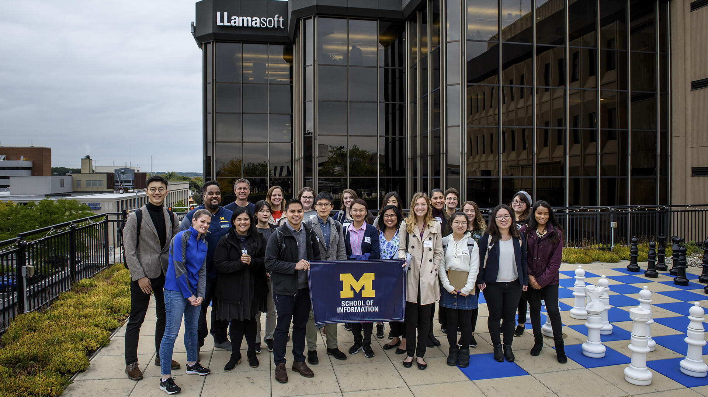

Career Coaching
UMSI CDO offers career coaching services
-
Professional Career Coaching
The Career Development Office includes a team of career coaches who work with students one-on-one to support them in achieving their career-related goals. This looks different from student to student and ession to session. We use a coaching model centered on what the student individually needs at the moment.
-
Peer career coaching
All UMSI students also have the valuable opportunity to receive peer career coaching from UMSI students who have gone through the internship search process successfully and are trained to help others achieve success as well. Peer coach sessions can be scheduled on CareerLink
Career Resources
UMSI CareerLink offers on-demand access to career support: internships, jobs, career coaching, career-building resources, special events and more. Learn more or Log in
Career Education

All UMSI students have access to comprehensive career education opportunities led by experts from the Career Development Office team. These opportunities are offered through multiple formats and are designed to provide equity in career education for all UMSI students including credit-based courses and co-curricular workshops as well as employer-related activities. These career education opportunities are designed to offer students opportunities for self-assessment, career exploration, job and internship search readiness and long term career management and success.